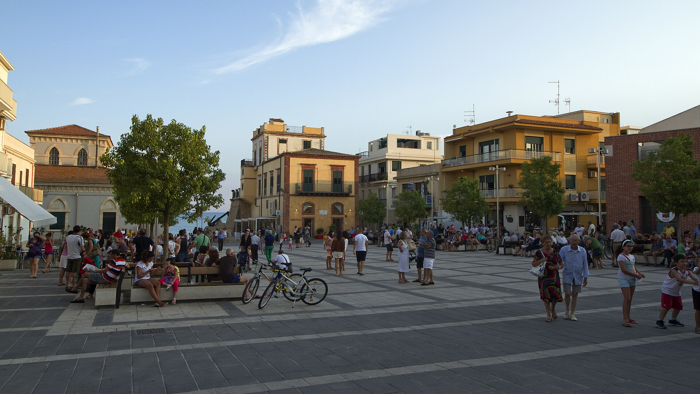

Marina di Ragusa — Il salotto del mare e della movida iblea.
Cuore pulsante della frazione balneare ragusana, questa piazza pedonale si apre a pochi passi dalle spiagge dorate ed è il punto d'incontro per eccellenza del litorale.

La piazza funge da spettacolare atrio d'ingresso al Lungomare Andrea Doria. La sua pavimentazione chiara riflette la luce del sole, creando un'atmosfera aerea e tipicamente marina.
A breve distanza dalla piazza sorge la storica chiesa protettrice dei pescatori, fondata negli anni '30 del Novecento, che conserva il profondo legame spirituale della comunità con il mare.
Circondata da bar, gelaterie artigianali e locali, la piazza ospita durante la bella stagione eventi culturali, concerti all'aperto e mercatini, trasformandosi nel fulcro delle passeggiate serali.
Sui lati dello spiazzo si affacciano palazzine storiche dal gusto eclettico che testimoniano lo sviluppo turistico e signorile vissuto da questo antico borgo marinaro (un tempo chiamato "Mazzarelli").